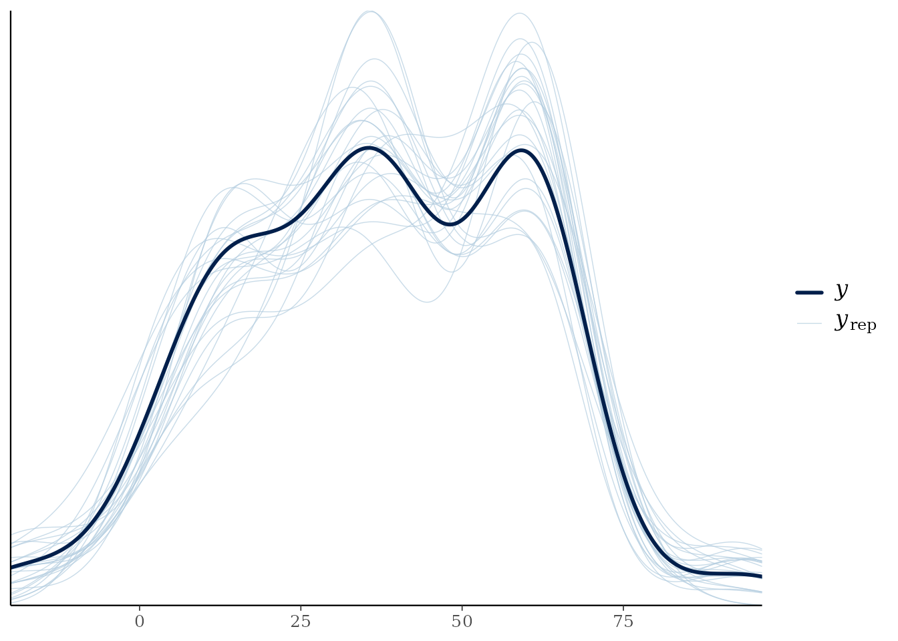

Fitting and Working with MVBeliefUpdatr Stanfit Models
T. Florian Jaeger
Source:vignettes/fitting-and-working-with-stanfit-models.Rmd
fitting-and-working-with-stanfit-models.Rmd1. Introduction and Overview
The MVBeliefUpdatr package provides Bayesian hierarchical Stan models for incremental cognitive belief-updating during speech perception and multidimensional categorization experiments. These models fit observer and adaptor beliefs (e.g., Normal-Inverse-Wishart [NIW] and Normal-Inverse- [NIX]) across exposure blocks or participant groups using MCMC sampling via rstan or cmdstanr.
Fitted models are returned as typed S7 objects inheriting from
MVBU_Stanfit (e.g., NIW_IdealAdaptorStanfit or
NIX_IdealAdaptorStanfit). This vignette details:
-
Preparing Data and Inputs: Structuring exposure
data and bundling priors with
new_ideal_adaptor_stanfit_input(). -
Model Fitting, Backends & Threading: Executing
Bayesian estimation via
fit_ideal_adaptor()orfit_ideal_observer(), selecting between rstan and cmdstanr backends, and configuring between-chain (cores) and within-chain (threads) parallelization. -
Model Summaries & Diagnostics: Printing,
summarizing, and evaluating convergence (
rhat,neff_ratio,get_draws). -
Accelerated Post-Processing: Pre-extracting
posterior latents and closures with
add_posterior_latents()for fast visualization. -
Model Comparison & Criteria: Storing
information criteria with
add_criterion(), comparing models withloo_compare(), and generating posterior predictive checks withpp_check().
Companion Vignettes
- For the basic class structure of
MVBeliefUpdatr, see the vignette S7 Class Architecture, Constructors, and Workflows - For visualization workflows corresponding to these objects, see the vignette: Visualizing Categories, Categorization Functions, and Belief Updating.
2. Preparing Data and Input Bundles
(MVBU_Staninput)
Before fitting a model in Stan, raw participant observations
(containing continuous cue dimensions such as Formant frequencies
or Voice Onset Time [VOT]) are packaged alongside prior hyperparameters
using new_ideal_adaptor_stanfit_input().
The input pipeline: 1. Standardizes or scales continuous cue
dimensions (e.g., z-scoring relative to exposure distribution). 2. Sets
up conjugate prior distributions over category parameters (e.g., mean
,
scatter matrix
,
prior sample size
,
and degrees of freedom
).
3. Creates a strongly typed S7 input object based on the cognitive model
family and integration architecture: - NIW:
NIW_IdealAdaptorStaninput (multivariate full covariance
updating) - NIX: NIX_IdealAdaptorStaninput
(single-cue univariate updating) - Early Integration
(MNIX): {Integrator}_MNIX_IdealAdaptorStaninput
(e.g., IdealIntegrator_MNIX_IdealAdaptorStaninput,
WeightedIntegrator_MNIX_IdealAdaptorStaninput,
CategoryWeightedIntegrator_MNIX_IdealAdaptorStaninput,
etc.; early projection
followed by 1D updating) - Late Integration (MNIX):
MNIX_IdealAdaptor_{Integrator}Staninput (e.g.,
MNIX_IdealAdaptor_IdealIntegratorStaninput,
MNIX_IdealAdaptor_WeightedIntegratorStaninput,
MNIX_IdealAdaptor_CategoryWeightedIntegratorStaninput,
etc.; independent per-cue NIX distributions with late decision-level
weighting)
# Construct standard 2-cue NIW ideal adaptor Stanfit input
stan_input <- example_ideal_adaptor_stanfit_input(
model_family = "NIW",
n_cues = 2L,
seed = 42L
)3. Fitting Bayesian Models (fit_ideal_adaptor)
To fit the model, fit_ideal_adaptor() passes the
stan_input bundle to Stan’s MCMC sampler.
3.1 Basic Fitting Workflow
By default, fit_ideal_adaptor() uses the
"rstan" backend:
# Executing MCMC sampling (interactive fitting call)
fit <- fit_ideal_adaptor(
stan_input,
chains = 4,
iter = 2000,
warmup = 1000,
seed = 42
)3.2 Execution Backends: rstan
vs. cmdstanr
MVBeliefUpdatr supports two execution backends via the
backend argument:
-
"rstan"(default): Fits models in-process using the rstan package. Precompiled models bundled with the package are used directly, avoiding runtime C++ compilation delays. -
"cmdstanr": Fits models out-of-process via the cmdstanr interface to CmdStan.
Why Choose cmdstanr?
-
Speed & Toolchain: CmdStan provides access to
newer Stan versions (
stanc3), faster C++ compilation, and lower memory overhead during long chains. - Process Isolation: Running sampling in separate command-line processes ensures that MCMC errors or crashes do not take down the active R session.
-
Unified Object Architecture: Regardless of backend,
fit_ideal_adaptor()returns a consistent S7MVBU_Stanfitobject whose@backendslot indicates the backend used, and whose@stanfitslot contains a standardstanfitobject. All downstream functions (summary(),get_draws(),add_posterior_latents(),add_criterion(),pp_check()) work identically:
# Fitting via the cmdstanr backend
fit_cmdstan <- fit_ideal_adaptor(
stan_input,
backend = "cmdstanr",
chains = 4,
iter = 2000,
warmup = 1000,
seed = 42
)
# Inspect the backend used
fit_cmdstan@backend
#> [1] "cmdstanr"3.3 Parallel Execution and Within-Chain Threading
MVBeliefUpdatr supports two complementary levels of
parallelization:
-
Between-Chain Parallelism (
cores): Runs multiple MCMC chains simultaneously across CPU cores. For example, settingchains = 4, cores = 4fits each chain on its own CPU core. -
Within-Chain Multithreading (
threads): Divides computationally intensive likelihood loops across multiple CPU threads within a single chain using C++ threading.
Specifying Threads
The threads argument can be specified as an integer
count or as a list with a threads element:
-
threads = 2(orthreads = list(threads = 2)): Allocates 2 worker threads per chain. - Under
backend = "cmdstanr", the model is compiled withstan_threads = TRUEand executed withthreads_per_chain = 2. - Under
backend = "rstan", threads are assigned viarstan::rstan_options(threads_per_chain = 2).
Note on Total CPU Cores: Total core allocation equals . For instance, running 4 chains with 2 threads per chain requires available CPU cores.
# Parallel execution: 4 chains running across 4 cores, with 2 threads per chain
# (8 cores total)
fit_fast <- fit_ideal_adaptor(
stan_input,
backend = "cmdstanr",
chains = 4,
cores = 4,
threads = 2,
iter = 2000,
warmup = 1000,
seed = 42
)3.4 Custom Priors and Declarative Parameter Fixing
MVBeliefUpdatr supports declarative, brms-style custom
prior specifications via parameter_prior() and fine-grained
parameter fixing via fix_parameter().
Cognitive Parameters, Scopes, and Fixing Capabilities
The table below outlines every cognitive parameter, whether it can be fixed globally, whether it can be fixed for particular categories only (partial category fixing; remaining categories are estimated), and its prior family:
| Parameter | Scope / Dims | Can be fixed? | Can be fixed for particular category? | Prior Distribution | Stan Data Variable Names | Default Values |
|---|---|---|---|---|---|---|
m_0 |
Array [M] of Vector [K] | Yes | Yes | Normal(μ, σ) |
prior_mu_of_mprior_scale_of_tau
|
mu = colMeans(cues_trans) |
mu_0 |
Array [M] of Vector [K] | Yes | Yes | Fixed constant | mu_0_known_data |
— |
S_0 |
Array [M] of Matrix [K×K] | Yes | Yes | Decomposed into tau &
cor
|
— | — |
expected_Sigma_0 |
Array [M] of Matrix [K×K] | Yes | Yes | Scaled via ν₀ | — | — |
Sigma_0 |
Array [M] of Matrix [K×K] | Yes | Yes | Fixed constant | Sigma_0_known_data |
— |
tau |
Vector [K] (cues) | Only via S_0
|
Only via S_0
|
Cauchy(loc, scale) |
prior_loc_of_tauprior_scale_of_tau
|
loc = 0scale = 5 · sd(cues_trans)
|
cor |
Matrix [K×K] | Only via S_0
|
Only via S_0
|
LKJ(η) | prior_eta_of_cor |
eta = 1.0 (Uniform) |
kappa_0 |
Shared [1] or Category [M] | Yes | Yes | Cauchy(loc, scale) |
prior_loc_of_kappaprior_scale_of_kappa
|
loc = Kscale = 5 · max(N_obs)
|
nu_0 |
Shared [1] or Category [M] | Yes | Yes | Cauchy(loc, scale) |
prior_loc_of_nuprior_scale_of_nu
|
loc = K + 1scale = 5 · max(N_obs)
|
lapse_rate |
Scalar [1] | Yes | No | Beta(α, β) |
prior_alpha_of_lapse_rateprior_beta_of_lapse_rate
|
alpha = 1.0beta = 1.0
(Uniform) |
lapse_bias |
Simplex [M] | Yes | No | Dirichlet(α) | prior_alphas_of_lapse_bias |
rep_vector(1.0, M) |
category_prior |
Simplex [M] | Yes | No | Dirichlet(α) | prior_alphas_of_category_prior |
rep_vector(1.0, M) |
weights |
Simplex [K] (or [M, K]) | Yes | Only in category-weighted models | Dirichlet(α) | prior_alphas_of_weights |
rep_vector(1.0, K) |
Declarative Parameter Fixing (fix_parameter)
Parameters can be fixed globally or for a subset of categories using
fix_parameter():
# Fix global lapse rate to 2% and category priors equally
f_global <- c(
fix_parameter(0.02, class = "lapse_rate"),
fix_parameter(c(0.5, 0.5), class = "category_prior")
)
# Partial fixing: fix category '/d/' mean, estimate category '/t/'
f_partial <- fix_parameter(
value = c(F1 = 300, F2 = 1200),
class = "m_0",
category = "/d/",
cue_space = "original"
)
# Combine fixed parameter specifications
all_fixed <- c(f_global, f_partial)Prior Hyperparameters vs. Truly Known Category Moments
MVBeliefUpdatr distinguishes between prior
hyperparameters (m_0, S_0,
expected_Sigma_0) and truly known category moments
(mu_0, Sigma_0):
-
Prior hyperparameters (
m_0,S_0): Model the observer’s prior belief before exposure. During exposure, category representations update via conjugate belief updating (NIW or NIX), and the predictive likelihood is Student-t. -
Truly known moments (
mu_0,Sigma_0): Model categories whose mean vector or covariance matrix is fixed as a non-random physical constant.
Fixing either or both moments determines the conjugate belief updating and predictive likelihood family:
- Case 1 (both unknown): Standard NIW or NIX conjugate updating; Student-t predictive likelihood.
-
Case 2 (
Sigma_0known,mu_0unknown): Category covariance is fixed to . Category mean is updated via Normal-mean updating (, ). Because covariance is known with certainty, the predictive likelihood reduces to a Normal distribution with covariance . -
Case 3 (
mu_0known,Sigma_0unknown): Category mean is fixed to . Category covariance is updated around the known mean (, ). The predictive likelihood is Student-t with degrees of freedom. -
Case 4 (both
mu_0andSigma_0known): Category representation is completely fixed. No belief updating occurs with exposure, and the predictive likelihood is Normal(, ).
# Fix known covariance for /d/, estimate covariance for /t/
f_known_sigma <- fix_parameter(
value = matrix(c(100^2, 0, 0, 150^2), nrow = 2),
class = "Sigma_0",
category = "/d/",
cue_space = "original"
)
# Fix known mean for /d/, estimate mean for /t/
f_known_mu <- fix_parameter(
value = c(F1 = 300, F2 = 1200),
class = "mu_0",
category = "/d/",
cue_space = "original"
)
# Combine with global and prior specifications
all_fixed <- c(f_global, f_known_sigma, f_known_mu)Specifying Custom Priors (parameter_prior)
Priors are specified using parameter_prior()
declarations:
priors <- c(
parameter_prior("cauchy(0, 2)", class = "tau_0"),
parameter_prior("lkj(2)", class = "cor_0"),
parameter_prior("beta(2, 50)", class = "lapse_rate"),
parameter_prior("dirichlet(c(2, 2))", class = "category_prior")
)Both fixed_parameters and priors are passed
directly to fit_ideal_adaptor():
fit <- fit_ideal_adaptor(
stan_input,
fixed_parameters = all_fixed,
priors = priors
)3.5 Pre-compiled Fits for Fast Exploration
For reproducible vignette compilation without long MCMC sampling delays, pre-compiled model fits can be accessed via package fixtures or helpers:
# Load or fit 1-cue NIW ideal adaptor Stanfit model
models_dir <- if (dir.exists("../tests/testthat/models")) {
"../tests/testthat/models"
} else if (dir.exists("tests/testthat/models")) {
"tests/testthat/models"
} else {
tempdir()
}
fit_file <- file.path(
models_dir,
"example-stanfit-NIW_ideal_adaptor-1-standardize-42.rds"
)
fit <- example_ideal_adaptor_stanfit(
model_family = "NIW",
n_cues = 1L,
file = fit_file,
file_refit = "never"
)
# Inspect class hierarchy and model family
class(fit)
#> [1] "NIW_IdealAdaptorStanfit" "IdealAdaptorStanfit"
#> [3] "MVBU_Stanfit" "MVBU_Object"
#> [5] "S7_object"
get_family_name(fit)
#> [1] "NIW"
get_family(fit)
#> <MVBeliefUpdatr::MVBU_Family>
#> @ family_names :List of 3
#> .. $ name_short : chr "NIW"
#> .. $ name_long : chr "Normal-Inverse-Wishart Ideal Adaptor"
#> .. $ name_details:List of 4
#> .. ..$ CategoryRepresentation_name: chr "NIW_CategoryRepresentation"
#> .. ..$ CategoryTemplate_name : chr "NIW_CategoryRepresentationTemplate"
#> .. ..$ CognitiveModel_name : chr "NIW_IdealAdaptor"
#> .. ..$ CognitiveModelList_name : chr "NIW_CognitiveModelList"
#> @ density_function : function (x, rep, log = FALSE, noise_treatment = "no_noise", Sigma_noise = NULL)
#> @ sampling_function : function (rep, n = 1L, with_replacement = TRUE, ...)
#> @ expected_moments : function (rep)
#> @ marginal_moments : function (rep)
#> @ sufficient_statistics_function: NULL
#> @ stanmodel :List of 2
#> .. $ stanmodel_name: chr "NIW_ideal_adaptor"
#> .. $ stanfit_class : chr "NIW_IdealAdaptorStanfit"4. Lightweight Posterior Representations
(MVBU_StanfitPosterior)
While full MVBU_Stanfit objects store raw sampling
chains, diagnostic metrics, compiled C++ structures, and source
matrices, downstream evaluation and plotting workflows often only
require parameter draw distributions.
The MVBU_StanfitPosterior S7 class provides a
lightweight representation of fitted posterior distributions. It strips
away heavy Stan compilation structures while retaining parameter draws
and metadata, enabling fast serialization, evaluation, and
visualization.
# Coerce a full Stanfit model to a lightweight posterior representation
post_model <- as_MVBU_stanfit_posterior(fit)
post_model
#> MVBeliefUpdatr Lightweight Stanfit Posterior
#> Model Family : NIW
#> Group Context : no_exposure, left_shifted, right_shifted
#> Cues : VOT
#> Categories : /d/, /t/
# Inspect cue labels, categories, response categories, and groups
get_cue_labels(post_model)
#> [1] "VOT"
get_category_labels(post_model)
#> [1] "/d/" "/t/"
get_response_category_labels(post_model)
#> [1] "/d/" "/t/"
get_group_labels(post_model, include_prior = TRUE)
#> [1] "prior" "no_exposure" "left_shifted" "right_shifted"
# Inspect model family via the modern S7 family system
get_family_name(post_model)
#> [1] "NIW"
get_family(post_model)
#> <MVBeliefUpdatr::MVBU_Family>
#> @ family_names :List of 3
#> .. $ name_short : chr "NIW"
#> .. $ name_long : chr "Normal-Inverse-Wishart Ideal Adaptor"
#> .. $ name_details:List of 4
#> .. ..$ CategoryRepresentation_name: chr "NIW_CategoryRepresentation"
#> .. ..$ CategoryTemplate_name : chr "NIW_CategoryRepresentationTemplate"
#> .. ..$ CognitiveModel_name : chr "NIW_IdealAdaptor"
#> .. ..$ CognitiveModelList_name : chr "NIW_CognitiveModelList"
#> @ density_function : function (x, rep, log = FALSE, noise_treatment = "no_noise", Sigma_noise = NULL)
#> @ sampling_function : function (rep, n = 1L, with_replacement = TRUE, ...)
#> @ expected_moments : function (rep)
#> @ marginal_moments : function (rep)
#> @ sufficient_statistics_function: NULL
#> @ stanmodel :List of 2
#> .. $ stanmodel_name: chr "NIW_ideal_adaptor"
#> .. $ stanfit_class : chr "NIW_IdealAdaptorStanfit"
# Extract expected moments conditional on parameter draws
get_expected_mu(post_model)
#> # A tibble: 8 × 3
#> group category mu.mean
#> <fct> <fct> <named list>
#> 1 prior /d/ <dbl [1]>
#> 2 prior /t/ <dbl [1]>
#> 3 no_exposure /d/ <dbl [1]>
#> 4 no_exposure /t/ <dbl [1]>
#> 5 left_shifted /d/ <dbl [1]>
#> 6 left_shifted /t/ <dbl [1]>
#> 7 right_shifted /d/ <dbl [1]>
#> 8 right_shifted /t/ <dbl [1]>
get_expected_sigma(post_model)
#> # A tibble: 8 × 3
#> group category Sigma.mean
#> <fct> <fct> <named list>
#> 1 prior /d/ <dbl [1 × 1]>
#> 2 prior /t/ <dbl [1 × 1]>
#> 3 no_exposure /d/ <dbl [1 × 1]>
#> 4 no_exposure /t/ <dbl [1 × 1]>
#> 5 left_shifted /d/ <dbl [1 × 1]>
#> 6 left_shifted /t/ <dbl [1 × 1]>
#> 7 right_shifted /d/ <dbl [1 × 1]>
#> 8 right_shifted /t/ <dbl [1 × 1]>
# Extract marginal moments incorporating parameter uncertainty
get_marginal_mu(post_model)
#> # A tibble: 8 × 3
#> group category mu.mean
#> <fct> <fct> <named list>
#> 1 prior /d/ <dbl [1]>
#> 2 prior /t/ <dbl [1]>
#> 3 no_exposure /d/ <dbl [1]>
#> 4 no_exposure /t/ <dbl [1]>
#> 5 left_shifted /d/ <dbl [1]>
#> 6 left_shifted /t/ <dbl [1]>
#> 7 right_shifted /d/ <dbl [1]>
#> 8 right_shifted /t/ <dbl [1]>
get_marginal_sigma(post_model)
#> # A tibble: 8 × 3
#> group category Sigma.mean
#> <fct> <fct> <named list>
#> 1 prior /d/ <dbl [1 × 1]>
#> 2 prior /t/ <dbl [1 × 1]>
#> 3 no_exposure /d/ <dbl [1 × 1]>
#> 4 no_exposure /t/ <dbl [1 × 1]>
#> 5 left_shifted /d/ <dbl [1 × 1]>
#> 6 left_shifted /t/ <dbl [1 × 1]>
#> 7 right_shifted /d/ <dbl [1 × 1]>
#> 8 right_shifted /t/ <dbl [1 × 1]>
# Evaluate decision likelihoods directly on the lightweight posterior
eval_res <- evaluate_model(post_model)
head(eval_res)
#> [1] -19.527085. Printing, Summarizing, and Diagnostics
MVBU_Stanfit objects provide clear, structured S7
print() and summary() outputs.
Printing
Printing an MVBU_Stanfit object displays its S7 class,
model type, cue labels, category labels, transformation status, and MCMC
sampling specifications:
print(fit)
#> <NIW_IdealAdaptorStanfit>
#> Model family: NIW
#> Categories (2): /d/, /t/
#> Cues (1): VOT
#> Groups (3): no_exposure, left_shifted, right_shifted
#> Draws: 25Summarizing
summary() computes posterior summary statistics for
prior hyperparameters
(),
group-specific belief parameters, and full distributions across MCMC
draws for both expected category moments and
marginal category moments:
- Expected moments: Moments of the category conditional on the parameters of each draw. The expected covariance is .
- Marginal moments: Moments marginalizing over uncertainty in the category mean , scaling the covariance by : .
Both moment tables report the mean, standard deviation, and standard Bayesian credible quantiles (2.5%, 25%, 50%, 75%, 97.5%) across posterior draws for all cues and cue covariances:
summary(fit)
#> // MVBeliefUpdatr Stanfit Model Summary
#> Model Family: NIW IdealAdaptor
#> Cues: VOT (K = 1)
#> Categories: /d/, /t/ (M = 2)
#> Observations: Total test observations = 15 across L = 3 exposure groups
#> Draws: 1 chains, each with iter = 50; warmup = 25; thin = 1
#> Total post-warmup draws = 25
#>
#> Fitted parameters:
#> Parameter Dist. Group Category Cue1 Cue2 mean se_mean
#> kappa prior 7.899678e+01 2.061247e+01
#> kappa prior 7.899678e+01 2.061247e+01
#> kappa prior 7.899678e+01 2.061247e+01
#> nu prior 4.576389e+01 6.872093e+00
#> nu prior 4.576389e+01 6.872093e+00
#> nu prior 4.576389e+01 6.872093e+00
#> m prior /d/ VOT 4.775269e+00 2.620190e+00
#> m prior /d/ <NA> -9.609973e-01 7.756631e-02
#> m prior /d/ <NA> 2.083971e-01 1.596156e-01
#> m prior /t/ VOT 4.427742e+01 5.391816e+00
#> S prior /d/ VOT VOT 5.647951e+03 2.401513e+03
#> S prior /t/ VOT VOT 2.168915e+06 1.414180e+06
#> lapse_bias /d/ 4.264910e-01 6.718138e-02
#> lapse_bias /t/ 5.735090e-01 6.718138e-02
#> lapse_bias /d/ 4.264910e-01 6.718138e-02
#> lapse_bias /d/ 5.735090e-01 6.718138e-02
#> lapse_rate 2.448485e-02 4.191057e-03
#> sd 2.5% 50% 97.5% n_eff Rhat
#> 8.987895e+01 5.478642e+00 2.544328e+01 2.999590e+02 19.01322 0.9825430
#> 8.987895e+01 5.478642e+00 2.544328e+01 2.999590e+02 19.01322 0.9825430
#> 8.987895e+01 5.478642e+00 2.544328e+01 2.999590e+02 19.01322 0.9825430
#> 3.436314e+01 8.733379e+00 4.253962e+01 1.145754e+02 25.00388 0.9809190
#> 3.436314e+01 8.733379e+00 4.253962e+01 1.145754e+02 25.00388 0.9809190
#> 3.436314e+01 8.733379e+00 4.253962e+01 1.145754e+02 25.00388 0.9809190
#> 8.895793e+00 -1.777735e+01 8.618990e+00 1.500751e+01 11.52667 1.0560544
#> 2.633449e-01 -1.628629e+00 -8.472104e-01 -6.580890e-01 11.52667 1.0560544
#> 9.436036e-01 -1.336491e+00 1.507154e-01 2.411372e+00 34.94850 0.9584253
#> 3.187493e+01 -7.908921e+00 4.232893e+01 1.186939e+02 34.94850 0.9584253
#> 1.240040e+04 1.657548e+02 2.392622e+03 3.250483e+04 26.66255 0.9813301
#> 7.446067e+06 1.409518e+03 3.745507e+04 1.788816e+07 27.72328 1.0048682
#> 2.743576e-01 7.283122e-02 4.422716e-01 9.550368e-01 16.67770 0.9789888
#> 2.743576e-01 4.496316e-02 5.577284e-01 9.271688e-01 16.67770 0.9789888
#> 2.743576e-01 7.283122e-02 4.422716e-01 9.550368e-01 16.67770 0.9789888
#> 2.743576e-01 4.496316e-02 5.577284e-01 9.271688e-01 16.67770 0.9789888
#> 2.477638e-02 2.590717e-03 1.957022e-02 9.223799e-02 34.94850 0.9815544
#>
#> Category moments (distributions across draws):
#> Parameter Group Category Cue1 Cue2 mean sd
#> mu left_shifted /d/ VOT 2.664136 7.789014e+00
#> Sigma_exp left_shifted /d/ VOT VOT 132.897231 8.245047e+01
#> Sigma_marg left_shifted /d/ VOT VOT 138.251080 9.109069e+01
#> mu left_shifted /t/ VOT 44.800085 2.686326e+01
#> Sigma_exp left_shifted /t/ VOT VOT 38727.397817 1.205916e+05
#> Sigma_marg left_shifted /t/ VOT VOT 39634.216952 1.222828e+05
#> mu no_exposure /d/ VOT 4.775269 8.895793e+00
#> Sigma_exp no_exposure /d/ VOT VOT 89.639051 9.939850e+01
#> Sigma_marg no_exposure /d/ VOT VOT 96.921697 1.176367e+02
#> mu no_exposure /t/ VOT 44.277420 3.187493e+01
#> Sigma_exp no_exposure /t/ VOT VOT 43059.926217 1.314125e+05
#> Sigma_marg no_exposure /t/ VOT VOT 44374.702831 1.334896e+05
#> mu prior /d/ VOT 4.775269 8.895793e+00
#> Sigma_exp prior /d/ VOT VOT 89.639051 9.939850e+01
#> Sigma_marg prior /d/ VOT VOT 96.921697 1.176367e+02
#> mu prior /t/ VOT 44.277420 3.187493e+01
#> Sigma_exp prior /t/ VOT VOT 43059.926217 1.314125e+05
#> Sigma_marg prior /t/ VOT VOT 44374.702831 1.334896e+05
#> mu right_shifted /d/ VOT 9.527333 8.841726e+00
#> Sigma_exp right_shifted /d/ VOT VOT 206.277047 1.370019e+02
#> Sigma_marg right_shifted /d/ VOT VOT 213.457534 1.425721e+02
#> mu right_shifted /t/ VOT 47.442429 2.751265e+01
#> Sigma_exp right_shifted /t/ VOT VOT 38892.171598 1.205855e+05
#> Sigma_marg right_shifted /t/ VOT VOT 39803.661860 1.222758e+05
#> 2.5% 50% 97.5%
#> -15.9620005 2.627774 11.42249
#> 53.6859942 109.923310 320.79622
#> 55.8034709 114.250501 342.04950
#> 0.3253109 42.981832 107.68585
#> 113.1548639 1599.577033 293380.08200
#> 123.9710021 1617.810209 300268.82526
#> -17.7773464 8.618990 15.00751
#> 12.9392842 71.421506 324.96400
#> 13.1676410 72.328169 367.24806
#> -7.9089212 42.328931 118.69394
#> 113.2182006 1465.108759 325350.42298
#> 129.0852146 1567.623337 336006.30388
#> -17.7773464 8.618990 15.00751
#> 12.9392842 71.421506 324.96400
#> 13.1676410 72.328169 367.24806
#> -7.9089212 42.328931 118.69394
#> 113.2182006 1465.108759 325350.42298
#> 129.0852146 1567.623337 336006.30388
#> -10.1296290 11.771837 20.72671
#> 50.6147658 149.229304 527.85208
#> 52.4653576 152.653202 558.34325
#> 2.6127790 45.010401 109.89988
#> 247.2698852 1533.174518 293479.56404
#> 255.1015679 1537.704659 300372.55523
#>
#> Warnings:
#> * Warning: The largest R-hat is 1.06, indicating potential convergence issues.
#>
#> Parameters with Rhats > 1.05:
#> Parameter Dist. Group Category Cue1 Cue2 Rhat
#> m prior /d/ VOT 1.056054
#> m prior /d/ <NA> 1.056054
#> m posterior no_exposure /d/ VOT 1.056054Extracting Draws & MCMC Diagnostics
Posterior draws can be extracted in tidy format using
get_draws(). When nest = TRUE is specified,
get_draws() provides draw-level expected covariance
matrices (Sigma_exp), marginal covariance matrices
(Sigma_marg), and standard covariance matrices
(Sigma).
Standard MCMC convergence diagnostics
(
and effective sample size ratio
)
are accessible via rhat() and
neff_ratio():
# Tidy posterior draws with draw-level covariance matrices
draws_df <- get_draws(fit, nest = TRUE, summarize = FALSE)
names(draws_df)
#> [1] ".chain" ".iteration" ".draw" "group" "category"
#> [6] "kappa" "nu" "m" "S" "lapse_rate"
#> [11] "Sigma_exp" "Sigma_marg"
# Convergence diagnostics across parameters
head(rhat(fit))
#> kappa_0_shared_param[1] nu_0_shared_param[1] category_prior_param[1,1]
#> 0.9903867 0.9896015 0.9610481
#> category_prior_param[1,2] lapse_bias_param[1,1] lapse_bias_param[1,2]
#> 0.9610481 0.9882127 0.9882127
head(neff_ratio(fit))
#> kappa_0_shared_param[1] nu_0_shared_param[1] category_prior_param[1,1]
#> 0.5272677 0.7065037 0.4123210
#> category_prior_param[1,2] lapse_bias_param[1,1] lapse_bias_param[1,2]
#> 0.4123210 0.5272677 0.52726776. Pre-extracting Posterior Latents & Evaluation Closures
(add_posterior_latents)
When producing complex multi-panel category plots, categorization decision boundaries, or posterior density curves across multiple exposure trials, downstream plotting and evaluation routines frequently need to access posterior latent parameter draws () and evaluate likelihood or posterior functions across observation grids.
By default, extracting draws repeatedly from an
MVBU_Stanfit object requires untransforming cue coordinates
and pivoting tables on every call.
Calling add_posterior_latents()
extracts draw-level latents once, computes expected and marginal
covariance moments, compiles vectorized evaluation closures, and stores
them in the object’s @cache slot:
-
draws:-
parameters: Nested tibble containing draw-level representations of , and lapse rate across groups and categories. -
likelihood_function: Closure evaluating category likelihoods for arbitrary test observations across draws, returning a 3D array[N_obs, K, N_draws]. -
posterior_function: Closure evaluating category posterior probabilities under specified decision rules, noise treatments, and lapse rates across draws, returning a 3D array[N_obs, K, N_draws].
-
-
summary:-
parameters: Point estimates of category parameters aggregated across draws. -
expected_moments: Distribution summary (mean, SD, quantiles) of category expected moments. -
marginal_moments: Distribution summary (mean, SD, quantiles) of category marginal moments. -
likelihood_function: Closure evaluating category likelihoods directly from marginal moments (returning a 2D matrix[N_obs, K]). -
posterior_function: Closure evaluating category posterior probabilities directly from marginal moments (returning a 2D matrix[N_obs, K]).
-
# Pre-extract posterior latents and closures into the model's @cache slot
fit <- add_posterior_latents(fit)
# Inspect cached quantities
names(fit@cache)
#> [1] "draws" "summary"
names(fit@cache$draws)
#> [1] "parameters" "likelihood_function" "posterior_function"
names(fit@cache$summary)
#> [1] "parameters" "expected_moments" "marginal_moments"
#> [4] "likelihood_function" "posterior_function"
head(fit@cache$summary$expected_moments)
#> # A tibble: 6 × 10
#> Parameter Group Category Cue1 Cue2 mean sd `2.5%` `50%` `97.5%`
#> <chr> <chr> <chr> <chr> <chr> <dbl> <dbl> <dbl> <dbl> <dbl>
#> 1 mu prior /d/ VOT "" 4.78e0 8.90e0 -17.8 8.62e0 1.50e1
#> 2 Sigma_exp prior /d/ VOT "VOT" 8.96e1 9.94e1 12.9 7.14e1 3.25e2
#> 3 mu prior /t/ VOT "" 4.43e1 3.19e1 -7.91 4.23e1 1.19e2
#> 4 Sigma_exp prior /t/ VOT "VOT" 4.31e4 1.31e5 113. 1.47e3 3.25e5
#> 5 mu no_exposure /d/ VOT "" 4.78e0 8.90e0 -17.8 8.62e0 1.50e1
#> 6 Sigma_exp no_exposure /d/ VOT "VOT" 8.96e1 9.94e1 12.9 7.14e1 3.25e2
head(fit@cache$summary$marginal_moments)
#> # A tibble: 6 × 10
#> Parameter Group Category Cue1 Cue2 mean sd `2.5%` `50%` `97.5%`
#> <chr> <chr> <chr> <chr> <chr> <dbl> <dbl> <dbl> <dbl> <dbl>
#> 1 mu prior /d/ VOT "" 4.78e0 8.90e0 -17.8 8.62e0 1.50e1
#> 2 Sigma_marg prior /d/ VOT "VOT" 9.69e1 1.18e2 13.2 7.23e1 3.67e2
#> 3 mu prior /t/ VOT "" 4.43e1 3.19e1 -7.91 4.23e1 1.19e2
#> 4 Sigma_marg prior /t/ VOT "VOT" 4.44e4 1.33e5 129. 1.57e3 3.36e5
#> 5 mu no_exposu… /d/ VOT "" 4.78e0 8.90e0 -17.8 8.62e0 1.50e1
#> 6 Sigma_marg no_exposu… /d/ VOT "VOT" 9.69e1 1.18e2 13.2 7.23e1 3.67e2Why Precomputed Latents and Closures are Advantageous
- Performance: Eliminates repeated data-wrangling loops during high-resolution contour or grid evaluations.
- Unified Evaluation: Both draw-wise and summary evaluation closures share identical interfaces and handle noise marginalization and lapse rates automatically.
-
Seamless Visualization: Plotting functions such as
plot_categories()andplot_categorization_functions()automatically leverage cached closures and moments.
For comprehensive examples of plotting category distributions and decision boundaries, see the companion vignette: Visualizing Categories, Categorization Functions, and Belief Updating.
7. Model Comparison and Information Criteria
MVBU_Stanfit objects integrate with loo
and bayesplot for Bayesian model comparison,
cross-validation, and posterior predictive checking, following the
argument conventions of brms.
Adding Fit Criteria (add_criterion)
Model fit criteria (such as "loo", "waic",
"bayes_R2", "loo_R2", "kfold",
"loo_subsample", or "marglik") are computed
and stored in the model’s @criteria slot using
add_criterion():
# Compute and store LOO and WAIC criteria
fit <- add_criterion(fit, criterion = c("loo", "waic", "bayes_R2"), model_name = "NIW_2Cue_Model")
# Inspect stored criteria
names(fit@criteria)
#> [1] "loo" "waic" "bayes_R2"
fit@criteria$loo
#>
#> Computed from 25 by 15 log-likelihood matrix.
#>
#> Estimate SE
#> elpd_loo -10.4 2.7
#> p_loo 1.7 0.7
#> looic 20.8 5.5
#> ------
#> MCSE of elpd_loo is NA.
#> MCSE and ESS estimates assume MCMC draws (r_eff in [0.8, 1.3]).
#>
#> Pareto k diagnostic values:
#> Count Pct. Min. ESS
#> (-Inf, 0.28] (good) 0 0.0% <NA>
#> (0.28, 1] (bad) 0 0.0% <NA>
#> (1, Inf) (very bad) 15 100.0% <NA>
#> See help('pareto-k-diagnostic') for details.
fit@criteria$bayes_R2
#> Estimate Est.Error Q2.5 Q97.5
#> 0.5 0.0 0.5 0.5
#> attr(,"class")
#> [1] "bayes_R2"Model Comparison (loo_compare)
When evaluating alternative model specifications (e.g., comparing
different prior specifications or model formulations),
loo_compare() performs Leave-One-Out Cross-Validation model
comparison via loo::loo_compare():
# Duplicate model for demonstration of loo_compare signature
fit2 <- fit
fit2@metadata$model_name <- "NIW_Alternative_Model"
# Compare models using LOO-CV
comp <- loo_compare(fit, fit2, criterion = "loo")
comp
#> model elpd_diff se_diff p_worse diag_diff diag_elpd
#> NIW_2Cue_Model 0.0 0.0 NA 15 k_psis > 0.28
#> NIW_Alternative_Model 0.0 0.0 NA 15 k_psis > 0.28Tip: Leave-One-Out Cross-Validation (
loo) is recommended overwaicfor robust model comparison, aswaiccan be sensitive to influential observations.
Posterior Predictive Checking (pp_check)
Graphical posterior predictive checks compare observed exposure data with synthetic observations drawn from the model’s posterior predictive distribution:
if (requireNamespace("bayesplot", quietly = TRUE)) {
# Overlay observed response density with posterior predictive replicates
pp_check(fit, type = "dens_overlay", ndraws = 30)
}
8. Reconstructing Exposure Update Histories
(reconstruct_update_history)
When fitting an ideal adaptor model in Stan, researchers often wish to inspect how beliefs evolve incrementally across exposure observations.
The reconstruct_update_history() generic takes an
MVBU_Stanfit object and reconstructs the sequential
updating process into an MVBU_ModelList container:
-
uncertainty_treatment = "marginalize"(default): Sequentially updates individual posterior MCMC draws (controlled byndraws, default20L, with optional parallelization viaparallel = TRUE). Returns anMVBU_ModelListholding lightweightMVBU_StanfitPosteriorobjects, faithfully capturing parameter estimation uncertainty across exposure checkpoints. -
uncertainty_treatment = "discard": Fast mode that computes prior marginal moments and sequentially updates a single point-estimate ideal adaptor (e.g.NIW_IdealAdaptororNIX_IdealAdaptor) across step checkpoints (e.g.step_size = 10L). Returns anMVBU_ModelListofMVBU_CognitiveModelobjects.
# 1. Fast point-estimate update sequence at checkpoints of 10 observations
model_seq_fast <- reconstruct_update_history(fit, uncertainty_treatment = "discard", step_size = 10L)
model_seq_fast
#> <MVBU_ModelList>
# 2. Full posterior update sequence with parameter uncertainty (10 draws)
model_seq_full <- reconstruct_update_history(fit, uncertainty_treatment = "marginalize", ndraws = 10L, step_size = 10L)
model_seq_full
#> <MVBU_ModelList>
# Inspect model labels along the exposure trajectory
head(model_seq_fast@model_labels)
#> [1] "N_0" "N_10" "N_20"The list of models that results from
reconstruct_update_history() can be used as input to model
visualizations, such a s plot_categories and
plot_categorization_functions. See vignette “Visualizing
Categories, Categorization Functions, and Belief Updating” for
examples of how to do this.
9. Summary and Related Documentation
In summary, the MVBU_Stanfit workflow provides an
integrated pipeline for Bayesian belief updating:
new_ideal_adaptor_stanfit_input() ──► fit_ideal_adaptor() ──► print() / summary()
│
├──► add_posterior_latents() (Fast Plotting & Closures)
├──► add_criterion() & loo_compare() (Model Selection)
└──► pp_check() (Predictive Checks)Links to Related Vignettes
- S7 Class Architecture, Constructors, and Workflows: Detailed technical reference for S7 classes, generics, and model construction.
- Visualizing Categories, Categorization Functions, and Belief Updating: Comprehensive plotting guide for 1D, 2D, and 3D category distributions and decision boundaries.
- Backward Compatibility: Working with Legacy Code: Transition guide from legacy list-column models to S7 architecture.